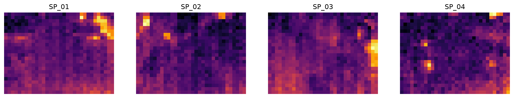

import matplotlib.pyplot as plt
from fastcore.test import *Clean
Read microcontroller SD-card logs into one flat, quality-flagged DataFrame
Each sensor node (SP_01, SP_02, …) writes a CSV log to its SD card. A row is one thermal frame: 768 pixel temperatures from the 32 × 24 MLX90640 camera, plus the soil readings and, on SP_01 only, the Ruuvi air sensor. Logs from different nodes differ in format and carry sensor faults, and future batches will too.
This module turns any set of logs into one DataFrame with a fixed schema, one row per frame, sorted by node and time. Faulty values are set to missing and flagged, never dropped: the raw logs stay the reference, and each analysis decides what to exclude.
Reading one log
A log’s columns fall into five groups. The schema below fixes their names and order for every node:
The logger writes the date and time as text next to the Unix timestamp, and the Ruuvi columns only when the firmware expects that sensor. So a raw line has one of two layouts, told apart by their field count:
read_log
def read_log(
path, # CSV log written by one node
)->pandas.DataFrame: # One row per frame, columns in `schema` order, sorted by time and frameRead one node’s log into the common schema
A log is not one table. The logger appends lines, and a single file can mix formats: SP_02 switches from ; to , delimiters across an outage in late September, and its first ten lines after the switch use SP_01’s Ruuvi layout. So read_log splits each line on its own delimiter and picks the column layout from its field count. A field count matching no known layout raises an error: a new firmware format should be noticed, not guessed.
Beyond that, read_log strips the leading space from node_id, adds the Ruuvi columns as missing for nodes without that sensor, and turns the -999 the logger writes for “no reading” into missing values.
time comes from the Unix timestamp, which encodes Austrian local time (it converts to the same wall-clock time the logger writes in its date and time columns). Those two text columns are dropped: they repeat timestamp, in a format that varies even within one file (2026-09-23 versus 23/09/2026).
data = Path('../data/b01')
sp2 = read_log(data/'dados_SP_02.csv')
sp2.iloc[:3, :12]| node_id | time | timestamp | measurement_id | frame | ruuvi_temp | ruuvi_humidity | ruuvi_pressure | soil_moisture | soil_temperature | leaf_temp_mean | leaf_temp_max | |
|---|---|---|---|---|---|---|---|---|---|---|---|---|
| 0 | SP_02 | 2026-09-23 11:49:21 | 1790164161 | 5967213 | 1 | NaN | NaN | NaN | 24.5 | 22.5 | 26.02 | 31.39 |
| 1 | SP_02 | 2026-09-23 11:49:21 | 1790164161 | 5967213 | 2 | NaN | NaN | NaN | 24.5 | 22.5 | 25.98 | 31.73 |
| 2 | SP_02 | 2026-09-23 11:49:21 | 1790164161 | 5967213 | 3 | NaN | NaN | NaN | 24.5 | 22.5 | 26.09 | 31.12 |
All logs in one table
read_logs
def read_logs(
paths, # CSV logs, one or more per node
)->pandas.DataFrame: # One row per frame for all nodes, sorted by node, time and frameRead logs from all nodes into one table
A node may leave several logs, for instance one per SD-card import, so read_logs takes any list of paths:
df = read_logs(sorted(data.glob('dados_*.csv')))
df.groupby('node_id').time.agg(['count', 'min', 'max'])| count | min | max | |
|---|---|---|---|
| node_id | |||
| SP_01 | 9159 | 2026-09-23 11:58:45 | 2026-10-05 16:45:00 |
| SP_02 | 12185 | 2026-09-23 11:49:21 | 2026-10-05 16:50:00 |
| SP_03 | 9991 | 2026-09-23 11:42:19 | 2026-10-05 16:50:00 |
| SP_04 | 14170 | 2026-09-23 11:37:37 | 2026-10-05 16:45:00 |
Quality flags
Sensors sometimes return values no plant or soil can have: a pixel at 877 °C or −253 °C after a faulty camera read, or a soil moisture of exactly 0 when the probe drops out. limits holds the open interval of plausible values for each measurement:
clean
def clean(
df:pandas.DataFrame, # Output of `read_logs`
limits:dict={'pixel': (0, 60), 'soil_moisture': (0, 100), 'soil_temperature': (0, 60)}, # Open interval of plausible values per measurement
)->pandas.DataFrame: # Same rows, implausible values missing, with `qc_*` flag columnsSet implausible values to missing, flag them, and recompute leaf summaries from the remaining pixels
clean keeps every row. A value outside its limits becomes missing, and a flag column records that it was there: qc_bad_px counts the pixels removed from each frame, and qc_soil marks rows that lost a soil reading. Values the logger never had (its -999) are simply missing, without a flag. The leaf summaries are recomputed from the remaining pixels, since the logger’s own summaries include the faulty ones: a single 877 °C pixel would otherwise set leaf_temp_max.
cdf = clean(df)
cdf.groupby('node_id')[['qc_bad_px', 'qc_soil']].agg(lambda s: (s > 0).sum())| qc_bad_px | qc_soil | |
|---|---|---|
| node_id | ||
| SP_01 | 22 | 5 |
| SP_02 | 150 | 0 |
| SP_03 | 212 | 0 |
| SP_04 | 109 | 0 |
The raw maximum leaf temperature reaches several hundred degrees; after cleaning, it stays within the limits:
test_eq(cdf.leaf_temp_max.max() < limits['pixel'][1], True)
df.leaf_temp_max.max(), cdf.leaf_temp_max.max()(np.float64(877.1), np.float64(59.99))One row per measurement
Every 5 minutes, a node takes a burst of usually 5 frames within one second. All frames in a burst share measurement_id and time. The firmware reads the soil and Ruuvi sensors once per burst, so each frame’s row repeats the same values. The pixels differ by about 0.3 °C from frame to frame, which looks like camera noise.
measurements combines each burst into one row. Each pixel becomes its median across the burst’s frames, so one faulty frame doesn’t move the result. Run it after clean, so pixels outside the limits are already missing and don’t count.
measurements
def measurements(
df:pandas.DataFrame, # Output of `clean`
)->pandas.DataFrame: # One row per node and time, with the median image of the burstCombine each burst of frames into one measurement
n_frames counts the frames in the burst. The leaf summaries are recomputed from the median image. qc_bad_px is the number of pixel readings removed from the whole burst, and qc_soil is true if any frame lost a soil reading. In batch 1, each frame with no valid pixel sits in a burst with good frames, so every measurement has an image:
mdf = measurements(cdf)
test_eq(mdf[px_cols].isna().all(axis=1).sum(), 0)
mdf.groupby('node_id').n_frames.value_counts().unstack(fill_value=0)| n_frames | 2 | 4 | 5 |
|---|---|---|---|
| node_id | |||
| SP_01 | 0 | 1 | 1831 |
| SP_02 | 0 | 0 | 2437 |
| SP_03 | 1 | 1 | 1997 |
| SP_04 | 0 | 0 | 2834 |
Air readings for every node
The nodes share one greenhouse, and the single Ruuvi sensor is wired to SP_01. Its air temperature, humidity and pressure therefore apply to every plant, and leaf minus air temperature is a key input to the crop water stress index. share_ruuvi copies the source node’s Ruuvi readings to every node. It matches each row to the nearest valid reading in time, within tolerance. The node clocks agree to about a second, so half of the 5-minute step is a safe tolerance. A row with no reading within tolerance, for instance during an outage of SP_01, gets missing values.
Share of measurements with an air temperature, per node. Outside the outages of SP_01, every node has one:
mdf = share_ruuvi(mdf)
mdf.groupby('node_id').ruuvi_temp.apply(lambda s: s.notna().mean()).round(2)node_id
SP_01 0.85
SP_02 0.58
SP_03 0.71
SP_04 0.51
Name: ruuvi_temp, dtype: float64Thermal images
frames
def frames(
df:pandas.DataFrame, # Rows of `read_logs`, `clean` or `measurements` output
)->numpy.ndarray: # Shape `(len(df), 24, 32)`, one thermal image per rowThermal images of the frames in df
Each row’s 768 pixels are one 24 × 32 image, stored row by row. frames reshapes them, so any selection of rows, by node, time or flag, gives an image stack. Here is the first frame of each node:
first = cdf.groupby('node_id').head(1)
fig, axs = plt.subplots(1, len(first), figsize=(16, 3))
for ax, im, node in zip(axs, frames(first), first.node_id):
ax.imshow(im, cmap='inferno')
ax.set_title(node)
ax.axis('off')
Quality report
qc_report
def qc_report(
df:pandas.DataFrame, # Output of `clean`
max_step:str='15min', # Longest expected interval between measurements
)->pandas.DataFrame: # One row per nodePer-node summary of coverage, gaps and quality flags
qc_report summarises a batch per node: its time span, the number of gaps longer than max_step, the share of rows with each environmental reading, and the frames and rows affected by the quality flags. frames_no_px counts frames with no valid pixel left, either because the camera returned nothing or because every pixel was implausible.
rep = qc_report(cdf)
rep.T| node_id | SP_01 | SP_02 | SP_03 | SP_04 |
|---|---|---|---|---|
| frames | 9159 | 12185 | 9991 | 14170 |
| measurements | 1832 | 2437 | 1999 | 2834 |
| first | 2026-09-23 11:58:45 | 2026-09-23 11:49:21 | 2026-09-23 11:42:19 | 2026-09-23 11:37:37 |
| last | 2026-10-05 16:45:00 | 2026-10-05 16:50:00 | 2026-10-05 16:50:00 | 2026-10-05 16:45:00 |
| gaps | 6 | 4 | 7 | 5 |
| longest_gap | 2 days 08:36:05 | 2 days 22:09:08 | 2 days 07:15:16 | 1 days 07:41:09 |
| ruuvi_temp_% | 85.2 | 0.0 | 0.0 | 0.0 |
| soil_moisture_% | 99.9 | 21.7 | 15.3 | 100.0 |
| soil_temperature_% | 100.0 | 14.2 | 15.3 | 100.0 |
| frames_bad_px | 22 | 150 | 212 | 109 |
| frames_no_px | 1 | 3 | 2 | 1 |
| soil_flagged | 5 | 0 | 0 | 0 |
find_gaps
def find_gaps(
df:pandas.DataFrame, # Output of `read_logs` or `clean`
max_step:str='15min', # Longest expected interval between measurements
)->pandas.DataFrame: # One row per gap: node, last measurement before it, first after it, and durationIntervals longer than max_step without a measurement, per node
find_gaps lists the outages behind the gaps count, to line them up across nodes:
gaps = find_gaps(cdf)
gaps| node_id | start | end | duration | |
|---|---|---|---|---|
| 0 | SP_01 | 2026-09-23 18:05:00 | 2026-09-24 10:16:55 | 0 days 16:11:55 |
| 1 | SP_01 | 2026-09-24 10:30:00 | 2026-09-24 14:19:12 | 0 days 03:49:12 |
| 2 | SP_01 | 2026-09-24 14:19:12 | 2026-09-24 14:40:37 | 0 days 00:21:25 |
| 3 | SP_01 | 2026-09-26 03:35:00 | 2026-09-28 09:14:11 | 2 days 05:39:11 |
| 4 | SP_01 | 2026-09-30 03:50:00 | 2026-09-30 13:45:02 | 0 days 09:55:02 |
| 5 | SP_01 | 2026-10-02 23:45:01 | 2026-10-05 08:21:06 | 2 days 08:36:05 |
| 6 | SP_02 | 2026-09-24 00:05:01 | 2026-09-24 10:19:29 | 0 days 10:14:28 |
| 7 | SP_02 | 2026-09-25 17:30:00 | 2026-09-28 15:39:08 | 2 days 22:09:08 |
| 8 | SP_02 | 2026-09-30 05:35:01 | 2026-09-30 13:44:19 | 0 days 08:09:18 |
| 9 | SP_02 | 2026-10-01 12:00:01 | 2026-10-01 14:07:37 | 0 days 02:07:36 |
| 10 | SP_03 | 2026-09-24 05:45:01 | 2026-09-24 10:13:53 | 0 days 04:28:52 |
| 11 | SP_03 | 2026-09-24 11:00:00 | 2026-09-24 14:37:49 | 0 days 03:37:49 |
| 12 | SP_03 | 2026-09-24 23:35:00 | 2026-09-25 08:39:07 | 0 days 09:04:07 |
| 13 | SP_03 | 2026-09-25 09:30:00 | 2026-09-25 13:15:41 | 0 days 03:45:41 |
| 14 | SP_03 | 2026-09-26 18:35:00 | 2026-09-28 15:27:49 | 1 days 20:52:49 |
| 15 | SP_03 | 2026-09-30 07:15:01 | 2026-09-30 13:41:41 | 0 days 06:26:40 |
| 16 | SP_03 | 2026-10-03 01:05:01 | 2026-10-05 08:20:17 | 2 days 07:15:16 |
| 17 | SP_04 | 2026-09-23 16:20:00 | 2026-09-24 10:08:16 | 0 days 17:48:16 |
| 18 | SP_04 | 2026-09-24 11:40:00 | 2026-09-24 13:17:08 | 0 days 01:37:08 |
| 19 | SP_04 | 2026-09-25 05:55:00 | 2026-09-25 08:29:13 | 0 days 02:34:13 |
| 20 | SP_04 | 2026-09-27 07:25:00 | 2026-09-28 15:06:09 | 1 days 07:41:09 |
| 21 | SP_04 | 2026-09-30 10:00:00 | 2026-09-30 13:41:17 | 0 days 03:41:17 |